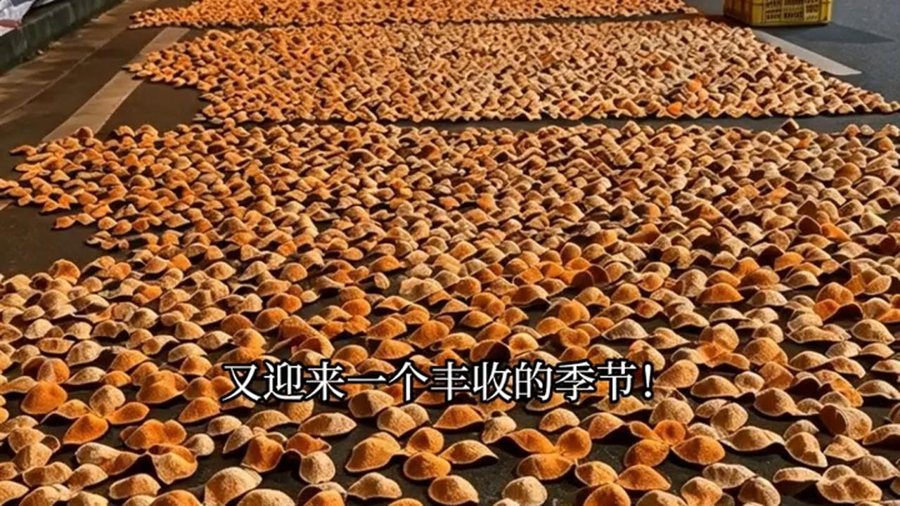
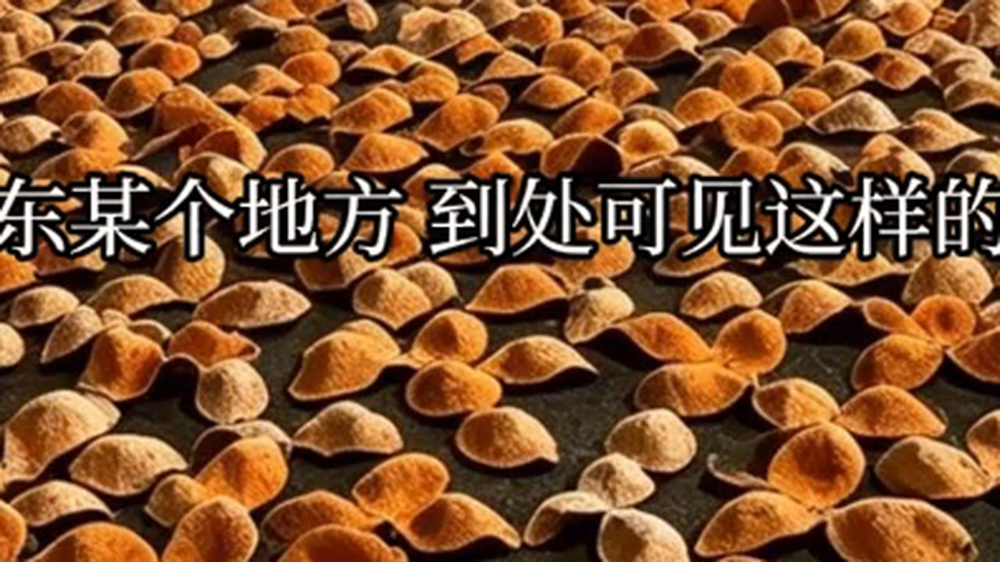
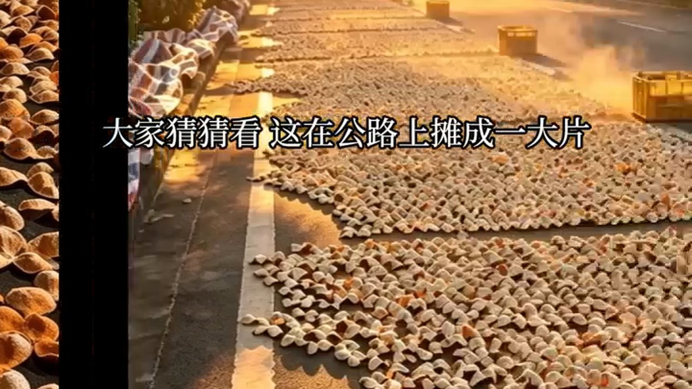
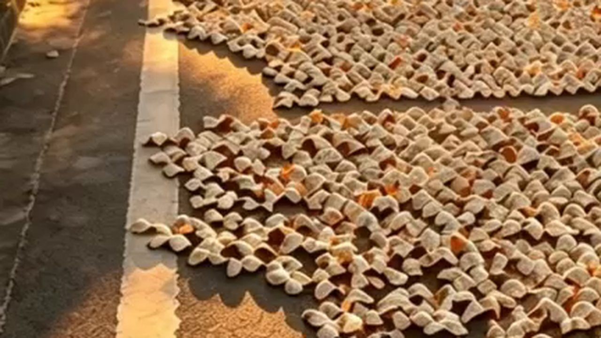

10月5日，國慶假期進入尾聲。新會柑還沒開摘，柑圈裡最熱的詞卻已經悄悄換了——從「核心產區」「十年陳」，換成了兩個字：圈枝（還有商家加碼的「原枝」）。有梅江果農專門拍片教人認「圈駁」，也有做了多年的賣家反過來勸人：別為「圈枝」兩個字閉眼衝。
這幾天開車經過新會、江門一帶的鄉道，會看到一種很特別的景象：公路邊攤開一大片柑皮，從早曬到晚。很多人第一反應是「這麼多，是真的嗎？」——這個問題問得很好，因為今年柑圈最貴的兩個字，恰恰就是「圈枝」。
一、公路邊那一大片，收皮的阿姐沒提「圈枝」

上週我開車去茶坑村，路邊一戶人家正在收皮。我把車停下來問了一句。
「呢啲全部係你屋企嘅柑？」
「係呀，今年果靚，趁好天曬多啲。你睇下油室，一粒粒咁密。」
「咁多，賣得晒咩？」
「賣唔晒就存住。皮唔怕放，驚嘅係放壞。」
這段對話裡沒有「圈枝」兩個字。真正在田裡做皮的人，很少把這兩個字掛在嘴邊——反倒是直播間，這兩個字一晚上能喊幾百次。
二、圈枝、駁枝、「原枝」：一層事實，兩層話術

先把能落地的事實挑出來（以下數字來自內地媒體及自媒體整理的柑農、商家公開口徑，屬量級參考）：
駁枝：把茶枝柑枝條嫁接到紅檸檬或紅橘砧木上育成。抗病強、產量高，佔新會柑的絕對主流，約九成半。
圈枝：從茶枝柑母樹上直接圈枝壓條育苗，屬無性繁殖、血統純。種植面積不足全區一成，產量佔比不到 5%，畝產還比駁枝低兩三成。
原枝：沒有統一定義。有人說它等於圈枝裡的老血統，也有商家把它抬成「比圈枝高一檔」。凡是拿「原枝」來解釋「為什麼比圈枝還貴」的，多花的那筆錢買的不是樹種，是形容詞。
「咁即係圈枝一定好過駁枝？」
「唔一定。同一棵樹，產區唔同、年份唔同、工藝唔同，差別大過枝型。你為一個飲唔出嘅變數畀兩倍錢，真正決定杯中物嘅產區同年份，反而冇驗過。」
三、價格那把尺：同產區同年份，圈枝是駁枝的 1.5～2 倍

柑圈沒有官方牌價，但有一條口徑被多位柑農重複：同產區、同年份，圈枝皮是駁枝皮的 1.5～2 倍。這條數字最有用，因為它是一把尺——
同一家店、同一產區等級、同一年份的貨，圈枝標到駁枝的 2 倍以內，是正常的稀缺溢價；標到 5 倍、10 倍，差價就不在皮上，在標籤上。我見過最典型的做法：把駁枝老樹的嫁接口用土埋起來，冒充圈枝老樹——同款「圈枝天馬大紅皮」，有人賣幾十塊一斤，有人賣上千一斤，差價十幾倍。
再看成本這一頭：一線核心村（東甲、梅江、天馬）駁枝鮮果收購價約 10–15 元/斤、圈枝柑 15–20 元/斤；而100 斤鮮果只出 4～5 斤乾皮，光鮮果成本就是 200～240 元/斤乾皮，還沒算人工、倉儲和三年自然損耗。所以「99 元梅江圈枝」這種數字，直接排除就好。
順帶一個真實案例：有消費者花 860 元在直播間搶了一斤「3 年陳梅江核心產區陳皮」，梅江三代柑農看過後判斷是外地柑皮拉到新會擺拍、做舊染色，真實成本不到 50 元。這個坑的本質不是「駁枝冒充圈枝」，而是「外地皮冒充梅江」——連產區這層都是假的，圈枝更是標籤套標籤。
四、為什麼成品皮幾乎分不出來

這是最多人不願意接受、但整個行業都承認的一點：圈枝和駁枝，從成品皮的外觀幾乎無法分辨，越陳越分不出。
果農能看的是樹上的鮮果——枝條、果蒂、長勢；不是你的罐子。要看分曉，得上果園、扒開樹根看嫁接口，普通買家沒有這個條件。
至於口感派的說法，也給一個冷靜的量級：有研究稱在同等產區、年份、工藝下，圈枝的黃酮、多糖只比駁枝高 5%～10%。產區先差一檔，這 5% 就被蓋過去了。所以排序大概率是：產區 > 年份 > 工藝儲存 > 枝型。
這也是我一直提醒客人那句話：先把手裡那片皮的產區和年份驗清楚，再談枝型。順序反了，錢就一定花錯。
五、這一季該盯什麼：三條可驗證的條件
如果還是想為「圈枝」付這筆溢價，三個條件同時滿足才值得考慮：
一、看憑證。賣家拿得出同批開皮、曬皮的過程記錄（視頻或照片），並能說清果園位置與繁殖方式——敢提嫁接口在哪的，可信度立刻高一檔。
二、對價格。高於同產區駁枝的 2 倍以內，且不低於成本常識線。
三、先喝過。自己先喝過核心產區的駁枝，嘗得出蜜香與柑香的路子差異，再談圈枝是不是錦上添花。
反過來說，兩種人不必花這筆錢：一是入門和口糧黨——三年陳的二線產區駁枝皮最穩妥，價格親民、容錯率高，存壞了也不心疼；二是只認標籤下單的人——圈枝對你只是一行商品標題，那一行的溢價，就是為你準備的。
今年這一季，還有一個數字值得盯着：一線村圈枝鮮果收購價能否守住 15～20 元/斤。這個價守不住，「平價圈枝」就沒有物理上的可能——因為 100 斤鮮果才出 4～5 斤乾皮，成本是算得出來的。
常見問題
圈枝和駁枝到底是什麼？駁枝是嫁接苗（接在紅檸檬或紅橘砧木上），抗病強、產量高，佔新會柑約九成半；圈枝是從母樹直接圈枝壓條育苗，無性繁殖、血統純，面積不足全區一成。
圈枝真的只佔不到 5% 嗎？據內地媒體整理的柑農口徑：圈枝種植面積不足全區一成，產量佔比不到 5%，畝產比駁枝低兩三成。數字屬量級參考，不同來源口徑略有出入。
「原枝」是什麼？目前沒有統一定義。有人說等於圈枝裡的老血統，也有商家抬成「比圈枝高一檔」。建議把它當成話術，而不是可核對的分類。
圈枝皮一定比駁枝好嗎？不一定。有研究稱同等產區、年份、工藝下，圈枝黃酮與多糖只比駁枝高約 5%～10%；而產區差異往往遠大於這個幅度。排序大致是產區 > 年份 > 工藝儲存 > 枝型。
同一產區，圈枝該貴多少？柑農的普遍口徑是同產區、同年份圈枝皮為駁枝皮的 1.5～2 倍。超過 2 倍要問清楚差價從哪來，到 5 倍、10 倍基本就是標籤的價格。
買家能自己驗出圈枝嗎？很難。成品皮外觀幾乎分不出來，越陳越難。能做的是看同批開皮與曬皮記錄、看果園與樹的照片，以及確認產區與年份是否可溯源。
結語
公路邊攤開的那一大片柑皮，是今年新會最樸素的一句話：皮是曬出來的，不是喊出來的。圈枝確實是好東西，但它的價值有上限，也有成本線。把錢花在產區正、年份實、驗證得了的那片皮上——哪怕它是駁枝，也比一個飄在標籤上的「圈枝」，更配得上你那隻存了三年的罐子。
註：本文價格與產量數字來自公開報道及柑農、商家公開口徑，受品質、批量、渠道影響，僅作量級參考，不構成交易建議。
想先學會四步辨真假，看這篇《十年陳皮一場夢：新會陳皮四步辨真假》；想知道降溫這幾天陳皮該怎麼吃，翻翻這篇《冷空氣南下，新會陳皮怎麼吃？》。想親眼看看曬場上的皮，來新會陳皮村南門牌坊G04找滢滢姐，店裡常年備着熱茶，可以當面看皮、免費試喝。
下期預告：十一月新會柑分批開摘，滢滢姐會把青皮、微紅皮、大紅皮三種採收時機擺在一起比——同一棵樹，早摘晚摘，香氣與價錢差多少，鏡頭下講清楚。